Triggers are the user definable mechanisms that detect the occurrence of aircraft conditions requiring actions. Once the need for an action is detected, triggers also initiate those actions. Armed triggers are evaluated once every second. Evaluations are based on the value of the parameters acquired during that second or during previous seconds. Using the measured parameter values, triggers perform calculations and comparisons and, based on the results, may initiate actions such as activating reports, starting or stopping recording, routing reports to devices, sending messages to the ground or changing the text on display screens.
To invoke the trigger definition interface, select Trigger option from the Define pull down menu or click Define-Trigger button from the toolbar. A typical application window of AGSIV, indicating the position of the toolbar and the trigger button, is shown in Figure 8.1.
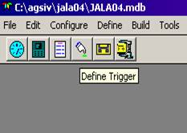 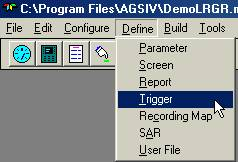
Figure 8.1: AGS IV Main Menu and Toolbar with Trigger Parameter
selected.
Once the selection is made, a new window titled Trigger Selection, with a list of previously defined triggers is opened. Figure 8.2 illustrates the trigger selection window where a typical trigger called CALCLOAD is shown being selected.
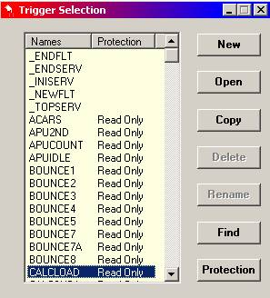
Figure 8.2: A Dialogue Box for display of pre-defined triggers.
Next to this list is a set of buttons that enable the user to:
define triggers,
existing triggers for display or modification,
one trigger definition into another,
a defined trigger,
an existing trigger,
a trigger or a group of triggers, or control of
the status of a trigger definition.
Here are explanations of the functions of each of these buttons:
- This selection first inquires for a trigger name (see Figure 8.3). The trigger name must be unique, starting with an alphabetic character, and may be followed by at most 7 alphanumeric characters. Trigger names starting with an under-score are defined by Teledyne. They are called reserved triggers and may be modified by the application developer, but may not be deleted from the application. Once the trigger name is defined, the AGSIV software allows definition of the trigger as described later in this chapter.
Figure 8.3 below shows an example of a trigger name specification window. The developer should respond by entering a name (e.g. ‘CLIMB’) and clicking the OK button.
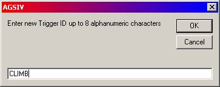
Figure 8.3:A Dialogue Box for naming of a new trigger.
- To open a trigger for inspection or modification, the trigger must be selected from the list of triggers in the system (see Figure 8.2). The list can be scrolled up or down using the arrows on the scroll bar. Once the trigger is opened, it can be modified, as described later in this chapter.
If a trigger name is not known, the Find function, described below, can be used to find a particular trigger which may then be opened.
- This function creates a new trigger while copying information from an existing trigger. First select the existing trigger, then select and enter the new trigger name when prompted (see Figure 8.3). The system will create a new trigger of specified name, with all other fields copied from the original trigger. The fields in the new trigger can now be modified as desired.
- To delete a trigger, select the trigger, press and confirm the deletion.
- To rename a trigger, select the trigger and press . This opens a new window similar to the one in Figure 8.3. Here the new trigger name, starting with an alphabetic character, followed by at most 7 alphanumeric characters, must be specified.
- This function allows searches of existing triggers, and creates a list of triggers that meet certain criteria. The list may consist of zero or more triggers.
The find function allows you to search for a trigger based on what you remember of its name or some particular text that exists in the trigger definition or the flight mode in which the trigger is active. In all cases, the known text should be entered in the relevant field and the button pressed. Note that two or even three of the above criteria might be specified at the same time. For example, it is possible to search for a trigger that contains the word “ENGINE” as part of the trigger name, contains the text “N1” and is active in flight mode 2 (see Figure 8.4).
Note that it is possible to specify the words to match stand-alone text (by selecting the MATCH selection), or to accept the word even if it is contained as part of a larger string of text (by selecting the CONTAIN selection). In figure 8.4, if CONTAIN is selected then a trigger with the name ENGINE and containing the text N1SAVED would also be added to the list of triggers meeting the search criteria.
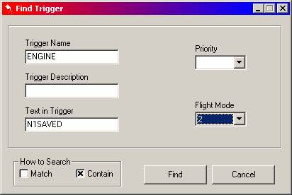
Figure 8.4: A template Dialogue Box for selective search of a
predefined parameter.
- Access to certain triggers requires a password. This button is used to activate a Dialogue Box, supply the password, and gain the needed access.
Some triggers need to be armed during the entire flight. Others may be needed only in certain flight modes. There are many reasons why a trigger might be armed only in selected flight modes; one reason is efficiency. For example, testing for hard landing conditions during cruise is obviously a needless load on the ACMS processor.
A second reason for disarming a trigger in a flight mode is to prevent a nuisance activation. For example, a trigger that checks for low oil pressure, if active in a flight mode where the engines are off, might generate unnecessary low oil pressure reports.
To select the flight modes in which the trigger must be armed, click on the corresponding flight mode button(s) (see Figure 8.5). To disarm a trigger in a flight mode that it has been armed, click again on that flight mode button. The number of flight modes and their definitions are defined by the user, using the configure menu (described later in this manual). If actions are to be initiated only once after each condition is met, then the trigger must be disarmed after the actions are initiated.
Figure 8.5 shows an example of a trigger definition editor window with flight mode specification. The trigger named CLIMB is armed for execution during the 5 (Initial Climb) and 5.1 (Climb) flight modes.
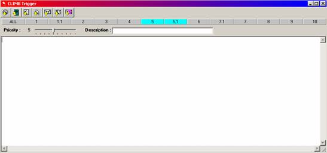
Figure 8.5: Trigger Editor Window. The 5 and 5.1 flight modes during
which the trigger is armed is shown selected (highlighted).
Once every second, during each flight mode, triggers that are armed for that flight mode execute from the beginning to the end. During this time the trigger conditions are tested and, when conditions hold, the corresponding actions will be initiated.
In some instances the actions of one trigger depends on another trigger. In these cases, the order of execution of the triggers becomes important. For example if one trigger is to calculate the value of a derived parameter and another trigger is to use that value, then the first trigger should be specified such that it is executed first. The trigger Priority, set by a sliding bar, is used to define the orders of execution (see Figure 8.5). Every second, all priority-one triggers are executed first. This is followed by the execution of priority two triggers and so on. Within a priority level there is no guarantee of the order of the execution of the triggers.
Once a new trigger is opened, a trigger definition window, as shown in Figure 8.6, appears. A small part of the trigger definition text is shown below, the rest can be seen by scrolling the text.
This trigger definition window has a toolbar at the top which permits the activation of a number of functions helpful to the composition of AMTAL triggers. Finally, there is a Description field, which carries commentary-type information about the trigger.
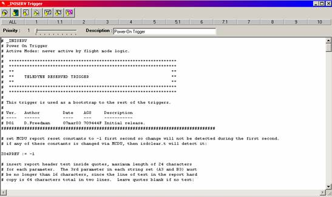
Figure 8.6: A typical Trigger Definition Window showing “power-on”
triggering conditions.
In cases the trigger wizard is not powerful enough and AMTAL commands need to be entered in the trigger logic area (see Figure 8.6), the following seven buttons of the toolbar are used to help the application developer. The advantage of these buttons is to reduce the number of keystrokes and to refresh the developers’ memory.
Many commands need a parameter name to be typed in as part of the command. This button displays all parameters defined in the application, so that one may be selected (see Figure 8.7). The selected parameter name is automatically inserted at the cursor position.
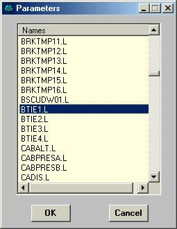
Figure 8.7: Parameter selection insertion Dialogue Box.
Some of the screen related commands in AMTAL need a screen name after the command. This button displays all the screens defined in the application so that one may be selected (see Figure 8.8). The selected screen name is automatically inserted at the cursor position.
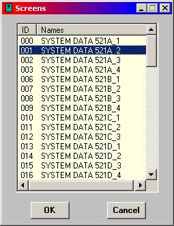
Figure 8.8: Screen selection insertion Dialogue Box.
Some of the report related commands need a report ID to be typed in after the command. This button displays all report IDs defined in the application, so that one may be selected (see Figure 8.9). The selected report ID is automatically inserted at the cursor position.
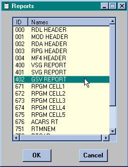
Figure 8.9: Report selection insertion Dialogue Box.
The arm and disarm commands in AMTAL need a trigger name to be typed in after the command. This button displays all triggers defined in the application, so that one may be selected (see Figure 8.10, left). The selected trigger name is automatically inserted at the cursor position.
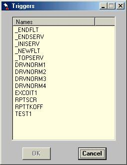 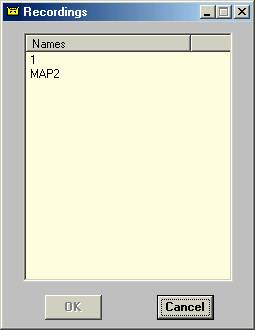
Figure 8.10: (left) Trigger selection insertion Dialogue Box.
(right) Recording Map insertion selection Dialogue Box.
Some of the recording commands in AMTAL need a recording map name after the command. This button displays all the recording maps defined in the application so that one may be selected (see Figure 8.12, right). The selected map name is automatically inserted at the cursor position.
This button displays all of the AMTAL commands (see Figure 8.11). If one of the commands is selected, it will be copied to the current cursor position. The possible commands are grouped into Assignment, Report Control, Recording, Flow Control, Special Action, Functions and Calls. Since there are a large number of Called functions, the list is separated into the group starting with the letters ‘a’ to ‘d’ and another group starting with letters ‘e’ to ‘u’. The individual commands and their functions are described in the AMTAL Users Manual.
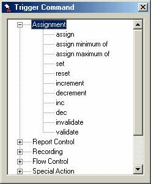
Figure 8.11: AMTAL Trigger Command Dialogue Box.
For FDIMU only. The SAR recording commands in AMTAL need a SAR map name after the command. This button displays all the SAR maps defined in the application so that one may be selected. The selected map name is automatically inserted at the cursor position (see figure 8.12).
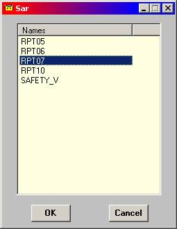
Figure 8.12: SAR Map Dialogue Box.
The white area at the lower end of the trigger definition window (see Figure 8.6) is for entering the actual trigger logic. This can be done by typing in the trigger logic using the keyboard and the insertion tools described above.
The AMTAL Users Manual should be used as a reference when writing the AMTAL trigger logic. As a style suggestion, we recommend that a history section, in the form of comments, be kept at the beginning of the trigger logic, for each change to the trigger. In this part, for each significant change in the trigger, a line should be added to the history indicating the date, author, and a description of the change. It is also advisable to include the version of the application where the change is made (see Figure 8.6)